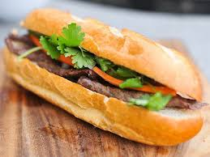

Banh Mi Recipe
A step by step of how to make a classic Banh Mi recipe by Nagi from 'Recipe Tin Eats'!

"This Banh Mi recipe covers the truly authentic meats as well as how to make an exceptional Banh Mi by just going to your everyday grocery store!" - Nagi
Ingredients -
- Vietnamese Cold Cuts: Meatballs or Chicken
- Crusty Baguettes
- Pork or Chicken Pate
- Mayonnaise
- Pickled Carrot
- Cucumber
- Optional: Soy Sauce, Coriander, Green Onion, Chilli
Assembly -
- Split the roll down the top middle (not along the side like you’d normally do)
- Smear with pate then mayo on one side (both if you’re feeling super indulgent)
- Jam in the ham, cucumber strips, carrot, green onion, then lastly coriander/cilantro
- Finish with a sprinkle of chilli (go hard or go home!😂) and a little sprinkle of Maggi Seasoning (about 1/2 tsp)
Sources: https://www.recipetineats.com/banh-mi-vietnamese-sandwich/ Image: https://www.seriouseats.com/grilling-steak-banh-mi-recipe